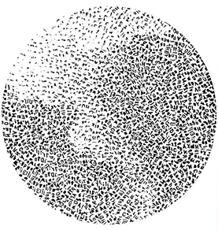
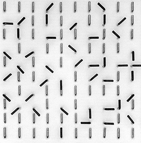
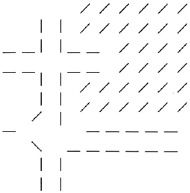
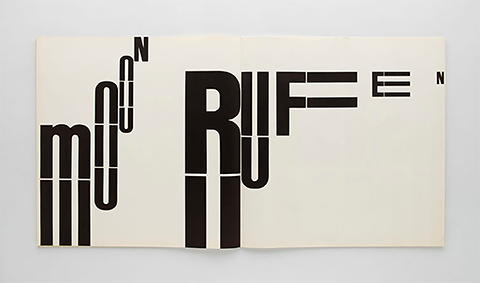
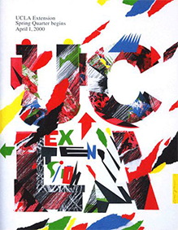

Introduction
Wolfgang Weingart is famously recognised in the design world for his iconic work in both graphic design and typography. The work he created was classified as Swiss Typography, as he once said; “I took Swiss Typography as my starting point, but then I blew it apart, never forcing any style on my students". Throughout this essay, I am going to explore the life of Wolfgang Weingart and aim to discover how he became known as “the father” of the New Wave typography.
Early Years
“It was the most important years of my life”
Born in February 1941, Weingart spent the first 13 years of his life living in Salem Valley located in southern Germany close to the border of Switzerland.
It was then in 1947 when Weingart began his journey in school, where he discovered that he had very little interest is academic subjects. In an interview, earlier this year he admitted “Cramming knowledge into my head didn’t appeal to me”. So, throughout his years of school, he found ways of cheating, as he did so by drilling holes into the surface of his desk which allowed him to read answers from below.
Near the end of World War II Weingart discovered a valuable lesson about himself in which discovered that he was a doer, not a thinker. One of the things he loved to do was take apart the girl’s bike he owned. Weingart would play and reconstruct different parts of the bike and put it back together again.
Education
In 1954 Weingart and his family packed their things and moved to Lisbon, Portugal where they lived for a total of 2 years. Over these years Weingart experienced education at a German school in which teacher acknowledged his artistic ability and agreed to give him private lessons. Whilst living in Lisbon, his parents took him on trips to Spain, Africa, and the Middle East. This allowed him to see beautiful landscapes and ancient ruins first hand which later influenced much of his work in later life.
When he returned back to Germany his parents enrolled him for the Merz Academy in Stuttgart where he started a 2-year programme in applied art and design. During the course of the programme, he not only learned about painting and drawing but also printing and graphic design. It was here that he began experimenting with type and during free time he was keen to set himself personal projects which led him to use metal type for the first time.
Apprenticeships
Weingart had a goal of learning in an industry that was relevant to graphic design, in which he began a typesetting apprenticeship at Ruwe Printing, Stuttgart in 1960. He was unaware that the line of work he was undertaking would have a major influence on his future as a designer. In the process of his time here Weingart would spend his weekends playing around and experimenting with type which led him to discover that there was a real creative potential behind type and letter forms. From this he gained a real admiration for the art of metal typesetting and printing, having mentioned in his book “My Way to Typography”; “The thoroughness of training during my apprenticeship, technically and aesthetically, the respect and awe I developed for every letter and for every typeset line was confirmation that my calling had been answered”.
This was also the year he first encountered Swiss Typography which inspired him remarkably throughout his years of being an apprentice. The International Typographic Style is commonly referred as ‘Swiss Style’. This movement was based on cleanness, readability, objectivity, and structure; the beginning of mathematical grids delivered consistent and easy to follow designs. Other features of the Swiss Style included the typeface Sans Serif and photography which is visible in Weingart's work. It was artists like Josef-Müller Brockmann, Ernst Keller and Armin Hofmann who innovated the Swiss Style by combing elements from movements like Bauhaus and De Stijl to achieve the clean and simplistic Swiss Style, which still inspires many designers today.
After he had completed the apprenticeship in March 1963, Weingart went to Basel where he met Armin Hofmann and applied in person to become a student in the year to follow. As you can imagine, Hofmann was truly amazed by the capability and talent of young Weingart’s work; he mentions in his book, “My Way to Typography”; “Hofmann's enthusiasm led me to believe that I would be accepted as a student". However, this was not the case; to Weingart's surprise, Holfmann invited him to teach at the school. Although this didn’t take place until 1968.
As planned the following year, 1964 Weingart began his new journey in Basel where he was taught by Hofmann and Emil Ruder – who encouraged his experiments with type and printing by granting him access to work freely in the school’s type workspace. Whilst being a student at Basel Weingart choose to still work at Ruwe Printing at weekends which allowed him to explore lino and woodcut illustrations which were inspired by Hap Grieshaber who was a German artist.
Work
One day during his internship at Ruwe Printing, the typecase fell on the floor. In an interview with Weingart, he says; “it would have taken me three days to sort it again in its typecases”. Rather than packing them back into their typefaces, Weingart took a creative approach to this accident and from this created one of his well-known pieces of work, the “Round Compositions”. He did so by arranging the smallest typefaces in a circle form and used cardboard to hold them together. Typical Weingart experimented with the round compositions which resulted in a series of striking pieces of work.
Figure 1: Round Composition
During his time of being a student in Basel, Weingart created another iconic series; “Line Pictures”. The first project he was given by Hofmann, involved using simple line forms. To which he responded by drilling 100 holes using a ten by ten grid into a thin square slab of wood. Screwing L-hooks into the holes and adjusting the hocks to his desired direction which you can see in figure 2. When it came to printing, Weingart was able to change the height of the hocks which allowed him to create a series prints with various patterns, one of those prints being figure 3.
Figure 2 & Figure 3: Line Pictures
One of my most favourable work of Weingart’s was produced in the act of a project which looked at letters and typographic elements in a new context. Experimenting and playing around with type; he looked at putting letters together and visually interpreting words using typographical elements. This led to the work shown in figure 4.
Figure 4: Letters and Typographic Elements in a New Context
Although Weingart may be extensively recognised for his experimental style in typography, he has also designed some great work in the area of graphic design. Around the time of the late 90’s Weingart designed a poster for a university in California which is shown in figure 4. The process of this work included using a photocopier to produce multicoloured images by changing the black cartridges to blue, to green to red and reprinted the colours a number of times. The final poster was put together by hand, scanned and retouched and colour corrected before reproduction.
Figure 4: UCLA Collage
Teaching
Weingart is recognised globally not only for his artistic works but also for his influence within the world of teaching. In 1968, he began to teach typography at Basel School of Design, where he previously attended. This was due to the realisation of Hoffman and Ruder’s goal, starting an advanced graphic design program for postgraduates. His career of teaching at the Basel School of Design lasted until 2005, where he was recognised as one of the most influential teachers within the International Advanced Program for Graphic Design. Whilst at the Basel School of Design, Weingart used his classroom as a method of progressing the designs and projects he had began at the school as an apprentice.
Weingart not only taught the students about topics such as systems and structure, but instead, he encouraged the students to be creative and engage in pursing their own ideas to understand if they were viable. Students recall Weingart giving feedback on the positioning of their sketches and the impression it created. He would tell them to make changes, and only then would he say it was better. In the beginning, students were confused as to why it was better, but over time they understood and learnt why. Weingart never sought to influence his students work, but rather to empower them to discover themselves and their own style.
After Weingart left Basel in 2005, he joined the Graphic Design Summer Program at Yale, which was based in Brissago, Switzerland. He also taught across the globe, including Europe, America and Asia. Throughout his teaching career, he sought to allow students to discover their own. He encouraged them to be creative and think outside the norm and that is possibly why so many of his students have progressed to help change the world.
Conclusion
To conclude, this essay has looked at Wolfgang Weingart and his journey from the unknown to becoming one of the most recognised designers and typographers in the world. The key role that his education played in his life, not only as a method of developing him as a person but showing him the path that he did not want to pursue. His ability to experiment with type in a new and unique method is the reason why his work is so internationally recognised. Wolfgang Weingart did not seek to have his own style nor did he seek to push it on to his students. He sought to develop individuals, including himself, and allow them to develop their own style. He empowered them to realise their own abilities and continuously develop the world of design and typography, particularly within Switzerland as it had become old and stagnant. For a man who did not find much joy or interest from traditional academia and education, he will leave behind a legacy of the methods that he taught and the influence he had on those he helped on their journey to transform the world through design.
References
| Websites: | Videos & Books: |
|---|---|
| http://www.swissdesignawards.ch/grandprix/2014/weingart/index.html?lang=en | Museum für Gestaltung. (2017). Wolfgang Weingart Typography – Interview. https://www.youtube.com/watch?v=Wg-bGZ5-vG0. |
| https://en.wikipedia.org/wiki/Wolfgang_Weingart | Weingart, W. 2014. My Way to Typography. Lars Müller Publishers. |
| http://www.printmag.com/typography/swiss-style-principles-typefaces-designers/ | |
| http://www.famousgraphicdesigners.org/wolfgang-weingart | |
| https://www.aiga.org/medalist-wolfgang-weingart | |
| https://www.aiga.org/medalist-aprilgreiman | |
| https://www.hermanmiller.com/designers/propst |